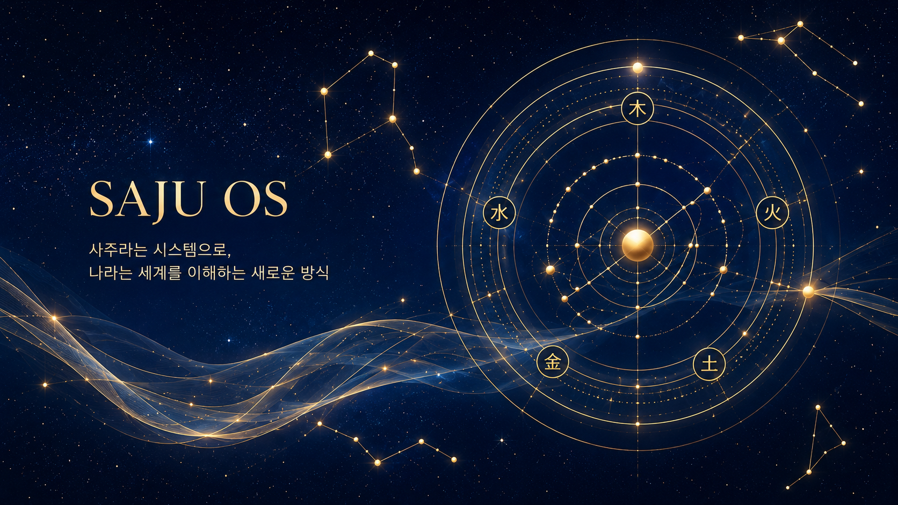
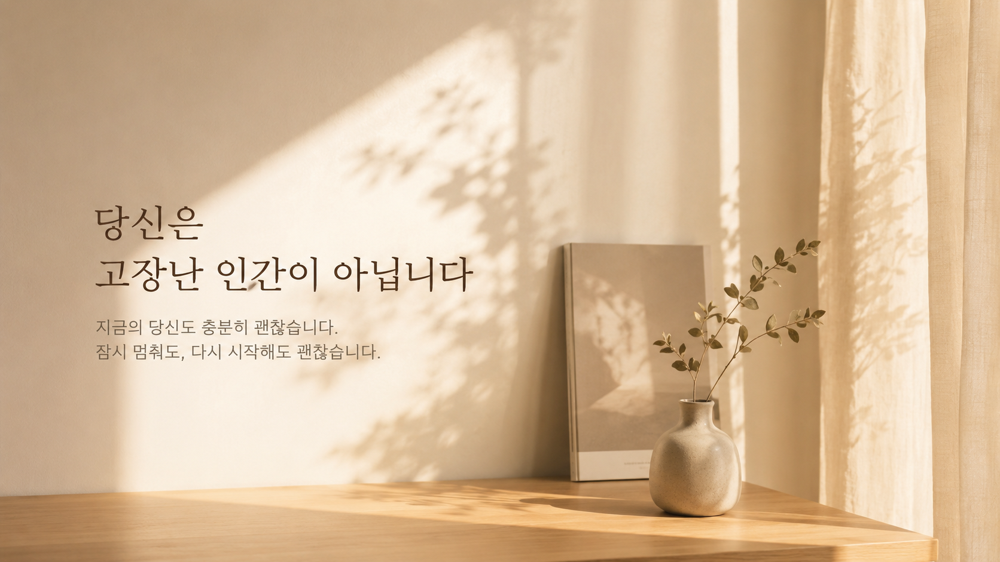

사랑받고 싶은데,
가까워지면 숨 막힐 때
원하는 건 사랑인데, 막상 가까워지면 도망가고 싶어집니다.
Consciousness Architecture Lab
웃다가 찔렸다면,
지금 내 마음의 자동반응이 켜진 겁니다.
너만 그런 거 아냐
다들 겉으론 멀쩡한 척하는데,
속에서는 혼자 별의별 시뮬레이션 다 돌리고 있어요.
중요한 건 당신이 이상한 게 아니라,
오래된 마음 구조가 아직 자동 실행 중이라는 겁니다.
내면 구조
CAL은 반복되는 감정과 행동을
“왜 이렇게 예민해?”로 보지 않습니다.
오래 저장된 내면 구조가
같은 버튼을 누르는 중인지 봅니다.
혹시 이런 반복을 겪고 있습니까?
원하는 건 사랑인데, 막상 가까워지면 도망가고 싶어집니다.
관계는 유지되는데, 마음은 점점 지쳐갑니다.
숫자보다 감정이 먼저 반응하고, 가능성보다 두려움이 먼저 켜집니다.
의지가 약해서가 아니라, 익숙한 반응 루프가 현실을 비슷하게 출력하고 있을 수 있습니다.
마음의 긴장이 몸으로 번지고, 몸은 말보다 먼저 신호를 보냅니다.

사주OS
사주는 인생을 결정하는 예언이 아니라,
내가 세상을 처음 해석하는 방식과
어떤 자극에 먼저 반응하기 쉬운지를 보여주는 기초 데이터입니다.
CAL은 사주를 이렇게 씁니다
CAL은 사주를 “너는 이렇게 살아야 한다”는 식으로 사용하지 않습니다.
사주는 내가 어떤 자극에 민감하게 반응하기 쉬운지,
어떤 방식으로 세상을 해석하기 쉬운지를 보여주는 하나의 초기 데이터입니다.
그래서 CAL은 사주만 보지 않습니다.
실제 반복되는 감정, 관계, 돈, 일, 몸의 반응까지 함께 봅니다.
CAL은 뭐하는 곳인가
CAL은 인간의 반복 반응을
의식 구조로 해석하는
자기이해 시스템입니다.
CAL은 “왜 또 이 패턴으로 돌아갔는지”를 함께 봅니다.
성격 탓도, 팔자 탓도,
의지 부족 탓도 하지 않습니다.
지금 내 안에서 어떤 자동반응 알고리즘이 반복 실행되고 있는지
구조적으로 보여줍니다.
이게 정말 도움이 되나
그 간격이 선택의 시작입니다.
왜 혼자서는 잘 안 보이나
거울이 필요합니다.
내 마음도 같습니다.
너무 익숙하게 반복해 온 반응은 오히려 나에게 너무 자연스러워서 잘 보이지 않습니다.
CAL 리포트는 그 반복 구조를 비춰주는 거울입니다.
CAL 리포트
CAL 리포트는 성격을 판단하거나 미래를 예언하지 않습니다.
지금 반복되는 현실 장면 뒤에서 어떤 자동반응 구조가 작동하는지 정리해주는
개인 의식 구조 설명서입니다.
추천 / 비추천

존재에 대한 확신
당신은 의식이 인간이라는 인터페이스를 통해 현실을 경험하는 존재입니다.
CAL은 당신을 문제투성이 인간으로 보지 않습니다.
구조가 보이면, 사람은 다시 선택할 수 있습니다.
CAL에 대해 더 궁금하다면 →
현실은 사건만으로 만들어지지 않습니다.
현실은 사건을 해석하고 반응하는 의식 구조의 출력입니다.
인간은 자동반응에 끌려갈 수 있지만,
의식하는 자아는 그 반응을 알아차리고 선택할 수 있습니다.
CAL은 사람을 평가하지 않고 구조를 봅니다.
구조가 보이면 선택이 열립니다.